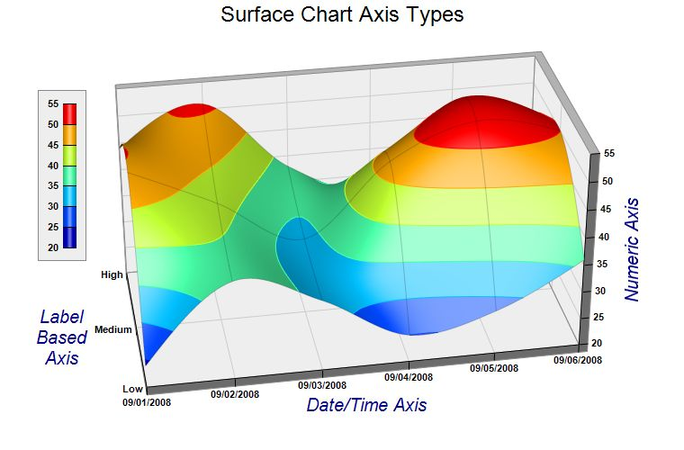

The example demonstrates different axis scale types for the surface charts.
Like an
XYChart, in a
SurfaceChart, the axis scale can represent numbers, date/time or labels. In this example, the x-axis uses a date/time scale, the y-axis uses a label based scale, and the z-axis uses a numeric scale.
The following is the command line version of the code in "cppdemo/surfaceaxis". The MFC version of the code is in "mfcdemo/mfcdemo". The Qt Widgets version of the code is in "qtdemo/qtdemo". The QML/Qt Quick version of the code is in "qmldemo/qmldemo".
#include "chartdir.h"
int main(int argc, char *argv[])
{
// The x and y coordinates of the grid
double dataX[] = {Chart::chartTime(2008, 9, 1), Chart::chartTime(2008, 9, 2), Chart::chartTime(
2008, 9, 3), Chart::chartTime(2008, 9, 4), Chart::chartTime(2008, 9, 5), Chart::chartTime(
2008, 9, 6)};
const int dataX_size = (int)(sizeof(dataX)/sizeof(*dataX));
const char* dataY[] = {"Low", "Medium", "High"};
const int dataY_size = (int)(sizeof(dataY)/sizeof(*dataY));
// The data series
double lowData[] = {24, 38, 33, 25, 28, 36};
const int lowData_size = (int)(sizeof(lowData)/sizeof(*lowData));
double mediumData[] = {49, 42, 34, 47, 53, 50};
const int mediumData_size = (int)(sizeof(mediumData)/sizeof(*mediumData));
double highData[] = {44, 51, 38, 33, 47, 42};
const int highData_size = (int)(sizeof(highData)/sizeof(*highData));
// Create a SurfaceChart object of size 760 x 500 pixels
SurfaceChart* c = new SurfaceChart(760, 500);
// Add a title to the chart using 18 points Arial font
c->addTitle("Surface Chart Axis Types", "Arial", 18);
// Set the center of the plot region at (385, 240), and set width x depth x height to 480 x 240
// x 240 pixels
c->setPlotRegion(385, 240, 480, 240, 240);
// Set the elevation and rotation angles to 30 and -10 degrees
c->setViewAngle(30, -10);
// Set the data to use to plot the chart. As the y-data are text strings (enumerated), we will
// use an empty array for the y-coordinates. For the z data series, they are just the
// concatenation of the individual data series.
c->setData(DoubleArray(dataX, dataX_size), DoubleArray(), ArrayMath(DoubleArray(lowData,
lowData_size)).insert(DoubleArray(mediumData, mediumData_size)).insert(DoubleArray(highData,
highData_size)));
// Set the y-axis labels
c->yAxis()->setLabels(StringArray(dataY, dataY_size));
// Set x-axis tick density to 75 pixels. ChartDirector auto-scaling will use this as the
// guideline when putting ticks on the x-axis.
c->xAxis()->setTickDensity(75);
// Spline interpolate data to a 80 x 40 grid for a smooth surface
c->setInterpolation(80, 40);
// Set surface grid lines to semi-transparent black (cc000000).
c->setSurfaceAxisGrid(0xcc000000);
// Set contour lines to the same color as the fill color at the contour level
c->setContourColor(Chart::SameAsMainColor);
// Add a color axis (the legend) in which the top right corner is anchored at (95, 100). Set the
// length to 160 pixels and the labels on the left side.
ColorAxis* cAxis = c->setColorAxis(95, 100, Chart::TopRight, 160, Chart::Left);
// Add a bounding box with light grey (eeeeee) background and grey (888888) border.
cAxis->setBoundingBox(0xeeeeee, 0x888888);
// Set label style to Arial bold for all axes
c->xAxis()->setLabelStyle("Arial Bold");
c->yAxis()->setLabelStyle("Arial Bold");
c->zAxis()->setLabelStyle("Arial Bold");
c->colorAxis()->setLabelStyle("Arial Bold");
// Set the x, y and z axis titles using deep blue (000088) 15 points Arial font
c->xAxis()->setTitle("Date/Time Axis", "Arial Italic", 15, 0x000088);
c->yAxis()->setTitle("Label\nBased\nAxis", "Arial Italic", 15, 0x000088);
c->zAxis()->setTitle("Numeric Axis", "Arial Italic", 15, 0x000088);
// Output the chart
c->makeChart("surfaceaxis.jpg");
//free up resources
delete c;
return 0;
}
© 2023 Advanced Software Engineering Limited. All rights reserved.